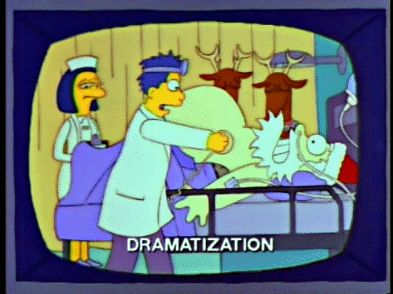

<mat-horizontal-stepper [linear]="true" #stepper>
    <mat-step>
        <ng-template matStepLabel>Challenge 1</ng-template>
        <div class="solutionContainer">
            <ng-container *ngIf="solutionChallengeOne !== 0">
                <p>{{solutionChallengeOne}} houses</p>
                
            </ng-container>

            <ng-container *ngIf="solutionChallengeOne === 0">
                <p>Data not found</p>
                
            </ng-container>
        </div>
    </mat-step>
    <mat-step>
        <ng-template matStepLabel>Challenge 2</ng-template>
        <div class="solutionContainer">
            <ng-container *ngIf="solutionChallengeTwo !== 0">
                <p class="solutionTwo">{{solutionChallengeTwo}} houses</p>
                
            </ng-container>

            <ng-container *ngIf="solutionChallengeTwo === 0">
                <p class="solutionTwo">Data not found</p>
                
            </ng-container>
        </div>
    </mat-step>
</mat-horizontal-stepper>